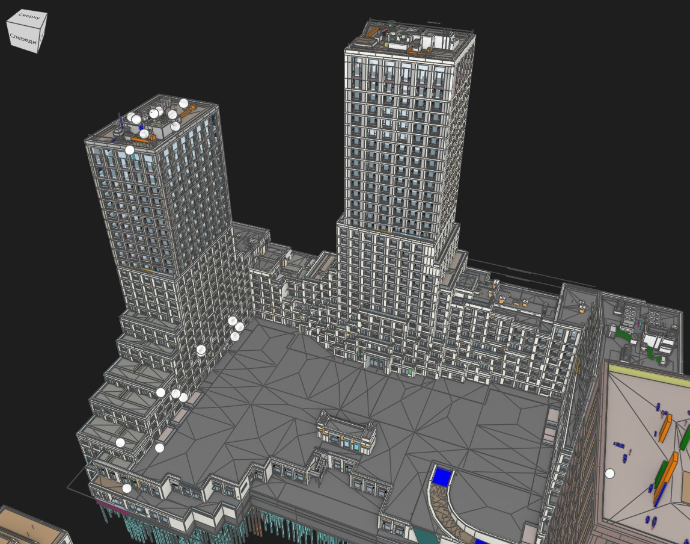
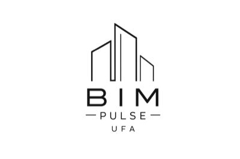
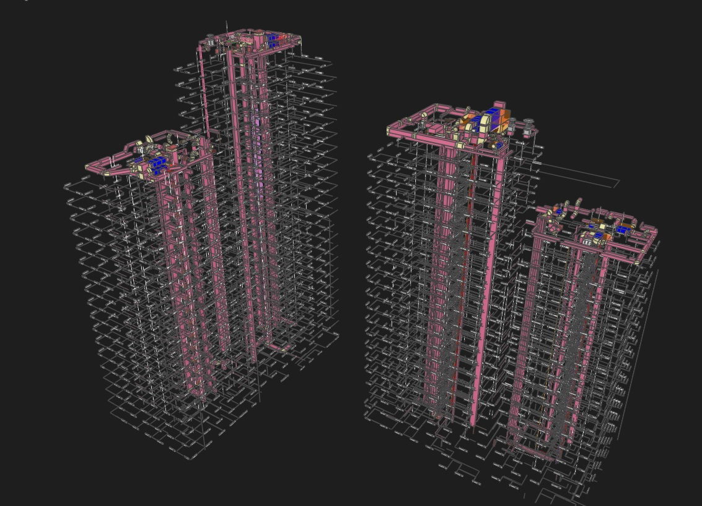

КООРДИНАЦИЯ
Снижение коллизий на 35%
Настроили регулярные проверки моделей, отчёты по коллизиям и контроль статусов между смежными разделами.

BIM Pulse UfaКЕЙСЫ
Показываем, как BIM-инструменты, Dynamo, AI и цифровая инфраструктура помогают ускорять работу, снижать ошибки и делать процессы прозрачными.

КООРДИНАЦИЯ
Настроили регулярные проверки моделей, отчёты по коллизиям и контроль статусов между смежными разделами.

АВТОМАТИЗАЦИЯ
Собрали Dynamo-скрипты для параметров, спецификаций, выгрузок и проверки качества BIM-данных.
Собрали Dynamo-скрипты для параметров, спецификаций и проверки качества данных.
Напишите в Telegram — обсудим задачу и предложим понятный план внедрения.
Обсудить проект